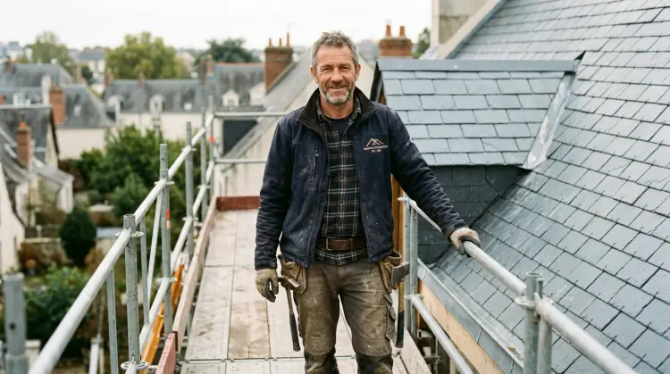

Rénovation et réparation de toiture
Fuite, tuiles cassées, faîtage fissuré : diagnostic précis, réparation ciblée ou réfection complète.
En savoir plus
Un appel suffit pour une urgence. Pour un devis, décrivez-nous votre projet : nous vous rappelons sous 24 h ouvrées et nous fixons une visite.
Couvreur à Angers, Les Garennes-sur-Loire
06 21 32 37 89
Fuite, tuiles cassées, faîtage fissuré : diagnostic précis, réparation ciblée ou réfection complète.
En savoir plus
Construction, extension ou réfection totale : une couverture neuve posée dans les règles de l'art.
En savoir plus
Nettoyage, traitement anti-mousse et hydrofuge : un toit propre dure des années de plus.
En savoir plus
Gouttières, chéneaux, noues et solins : l'eau évacuée loin de la maison, façades et fondations protégées.
En savoir plus
Plus de lumière sous les combles, une fenêtre de toit étanche et bien isolée, en pose neuve ou en remplacement.
En savoir plus
Une toiture terne retrouve sa teinte et une protection durable contre la pluie, le soleil et les UV.
En savoir plus